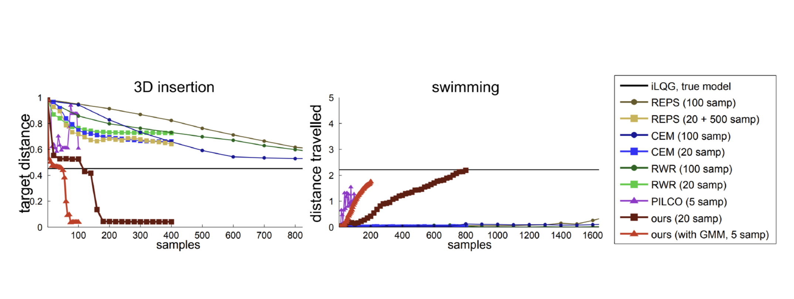

CSC2626 Imitation Learning for Robotics
Week 4: Imitation Learners Guided by Optimal Control Experts and Physics
Today’s agenda
• Guided policy search (GPS)
• Policy learning from adaptive MPC with privileged information (PLATO)
• Combining behavioral cloning and RL
• Dynamic movement primitives (DMPs)
• Expert iteration & learning to search
\(\boxed{\begin{aligned} p(x_{t+1} | x_t, u_t) &= \mathcal{N}(f(x_t, u_t), \Sigma) \\ f(x_t, u_t) &\approx A_t x_t + B_t u_t \\ A_t &= \frac{df}{dx_t} \quad B_t = \frac{df}{du_t} \end{aligned}}\)
\(\boxed{\begin{aligned} \text{iLQR/iLQG control} \\ \mathbf{u}_t = \mathbf{K}_t (\mathbf{x}_t - \hat{\mathbf{x}}_t) + \mathbf{k}_t + \hat{\mathbf{u}}_t \\ \text{is deterministic. We need it stochastic.} \end{aligned}}\)
\(p(u_t \mid x_t) = \mathcal{N}(K_t (x_t - \hat{x}_t) + k_t + \hat{u}_t, \Sigma_t)\)
\(p(\tau) = p(x_1) \prod_{t=1}^{T} p(u_t \mid x_t) p(x_{t+1} \mid x_t, u_t)\)
Learning a globally-valid NN policy: an example
We want to solve a stochastic version of this problem
\[ \begin{align} \min_{\mathbf{u}_1, \ldots, \mathbf{u}_T, \mathbf{x}_1, \ldots, \mathbf{x}_T, \theta} \sum_{t=1}^{T} c(\mathbf{x}_t, \mathbf{u}_t) \text{s.t.} \mathbb{x}_t = f(x_{t-1}, u_{t-1}) \\ \text{s.t.} \mathbf{u}_t = \pi_\theta (x_t) \end{align} \]
where both the policy and the dynamics are stochastic. I.e. we want to learn a globally-valid policy that imitates the actions of locally-valid iLQG policies.
KL-Divergence Constraints
▶ Modified cost function
\[ \min_{p(\tau) \in \mathcal{N}(\tau)} E_p[l(\tau)] \text{ s.t. } D_{\text{KL}}(p(\tau)||\hat{p}(\tau)) \leq \epsilon \]
\[ \begin{align} \color{red} \leftarrow \boxed{ \begin{align} \color{red}\text{Want to solve a stochastic version of} \\ \color{black} \min_{u_1, \ldots, u_T, x_1, \ldots, x_T} \sum_{t=1}^{T} c(x_t, u_t) \quad \text{s.t.} \quad x_t = f(x_{t-1}, u_{t-1}) \\ \color{red}\text{with an additional trust-region inequality constraint} \end{align} } \\ \end{align} \]
\(\color{black} \hat{p}(\tau)\) is the previous trajectory
distribution. Same dynamics,
different policy.
KL-Divergence Constraints
▶ Modified cost function
\[ \min_{p(\tau) \in \mathcal{N}(\tau)} E_p[l(\tau)] \text{ s.t. } D_{\text{KL}}(p(\tau)||\hat{p}(\tau)) \leq \epsilon \]
▶ Lagrangian of this problem (\(\eta\) dual variable)
\[\mathcal{L}_{\text{traj}}(p(\tau), \eta) = E_p[l(\tau)] + \eta[D_{\text{KL}}(p(\tau)||\hat{p}(\tau)) - \epsilon]\]
▶ Assuming \(p(\mathbf{x}_{t+1}|\mathbf{x}_t, \mathbf{u}_t) = \hat{p}(\mathbf{x}_{t+1}|\mathbf{x}_t, \mathbf{u}_t) = \mathcal{N}(f_{\mathbf{x}t}\mathbf{x}_t + f_{\mathbf{u}t}\mathbf{u}_t, \mathbf{F}_t)\)
\[ \mathcal{L}_{\text{traj}}(p(\tau), \eta) = \left[\sum_t E_{p(\mathbf{x}_t, \mathbf{u}_t)}[l(\mathbf{x}_t, \mathbf{u}_t) - \eta \log p(\mathbf{u}_t|\mathbf{x}_t)]\right] - \eta H(p(\tau)) - \eta \epsilon \]
▶ Augmented cost function
\[\tilde{l}(\mathbf{x}_t, \mathbf{u}_t) = \frac{1}{\eta}l(\mathbf{x}_t, \mathbf{u}_t) - \log \hat{p}(\mathbf{u}_t|\mathbf{x}_t)\]
▶ Solved by dual gradient descent
Dual Gradient Descent
\(\min_x f(x) \quad \text{s.t.} \quad C(x) = 0\)
\(L(x, \lambda) = f(x) + \lambda C(x)\)
\(g(\lambda) = L(x^*(\lambda), \lambda)\)
General Parameterized Policies
▶ Objective
\[ \min_{\theta,\, p(\tau)} \mathbb{E}_{p(\tau)}[\ell(\tau)] \quad \text{s.t.} \quad D_{KL}(p(x_t)\pi_\theta(u_t|x_t)\,\|\,p(x_t, u_t)) = 0,\ \forall t \]
▶ Lagrangian of the problem \[ \begin{align} \mathcal{L}_{GPS}(\theta, p, \lambda) &= \mathbb{E}_{p(\tau)}[\ell(\tau)] + \sum_{t=1}^{T} \lambda_t D_{KL}(p(x_t)\pi_\theta(u_t|x_t)\,\|\,p(x_t, u_t)) \\ \end{align} \]
OR \[ \qquad \qquad \qquad \qquad \qquad \qquad = \mathbb{E}_{p(\tau)}[\ell(\tau) - \eta\log\hat{p}(\tau)] - \eta\mathcal{H}(p) + \sum_{t=1}^{T} \lambda_t D_{KL}(p(x_t)\pi_\theta(u_t|x_t)\,\|\,p(x_t, u_t)) \]
if we include the trust-region constraint
General Parameterized Policies
Experiments Conducted
▶ 2D, 3D peg insertion (discontinuous dynamics)
▶ Octopus arm control (high-dimensional state and action space)
▶ Planar swimming (three-link snake)
▶ Walking (seven-link biped to maintain a target velocity)
Trajectory Optimization
Trajectory Optimization
Neural Network Policy Learning with GPS
Training with privileged information
\[ \boxed{ \begin{align} \min_{p,\, \theta} \mathbb{E}_{\tau \sim p(\tau)}[c(\tau)] \quad \\ \text{s.t.} \quad p(u_t \mid x_t) = \pi_{\theta}(u_t \mid x_t) \end{align} } \]
\[ \boxed{ \begin{align} \min_{p,\, \theta} \mathbb{E}_{\tau \sim p(\tau)}[c(\tau)] \quad \\ \text{s.t.} \quad p(u_t \mid x_t) = \pi_{\theta}(u_t \mid o_t) \end{align} } \]
https://www.youtube.com/watch?v=Q4bMcUk6pcw&t=40s&ab_channel=RAIL
Today’s agenda
• Guided policy search (GPS)
• Policy learning from adaptive MPC with privileged information (PLATO)
• Combining behavioral cloning and RL
• Dynamic movement primitives (DMPs)
• Expert iteration & learning to search
Problem Set-up
- States \(x\), actions \(u\).
- The policy could only control the system from observations \(o\).
- The policy \(\pi_\theta(u \mid o_t)\), parametrized by \(\theta\).
- At test time, the agent chooses actions according to \(\pi_\theta(u \mid o_t)\) at each time step \(t\), and experiences a loss \(c(x_t \mid o_t) \in [0, 1]\).
- The next state is distributed by dynamics \(p(x_{t+1} \mid x_t, u_t)\).
The objective is to learn policy \(\pi_\theta(u \mid o_t)\) such that
\[ \arg\min_\pi J(\pi) = \mathbb{E}_\pi \left[ \sum_{t=1}^{T} c(x_t, u_t) \right]. \]
At the same time, let’s define expected cost from state \(x_t\) at time \(t\) as
\[ J(\pi \mid x_t) = \mathbb{E}_\pi \left[ \sum_{t=1}^{T} c(x_t, u_t) \mid x_t \right]. \]
Adaptive MPC Teacher
One naive way is to train the policy with supervised learning from data generated from an MPC teacher. However, because the state distribution for the teacher and learner are different, the learned policy might fail.
In order to overcome this challenge, an adaptive MPC teacher is used which generates actions from a controller obtained by:
\[ \pi^t_\lambda(u \mid x_t, \theta) \leftarrow \arg\min_\pi J_t(\pi \mid x_t) + \lambda D_{KL}(\pi(u \mid x_t) \,\|\, \pi_\theta(u \mid o_t)) \qquad \tag{1} \]
where \(\lambda\) determines the relative importance of matching the learner policy versus optimizing the expected return. Note that the particular MPC algorithm is based on iLQG.
Algorithm
Algorithm 1: PLATO algorithm
Initialize data \(D \leftarrow \emptyset\)
for \(i = 1\) to \(N\) do
for \(t = 1\) to \(T\) do
\(\pi_\lambda^{t}(u_t \mid x_t, \theta) \leftarrow \arg\min_{\pi} J_t(\pi \mid x_t) + \lambda D_{KL}(\pi(u \mid x_t) \,\|\, \pi_{\theta}(u \mid o_t))\)
Sample \(u_t \sim \pi_\lambda^{t}(u \mid x_t, \theta)\)
\(\pi^{*}(u_t \mid x_t) \leftarrow \arg\min_{\pi} J(\pi)\)
Sample \(u_t^{*} \sim \pi^{*}(u \mid x_t)\)
Append \((o_t, u_t^{*})\) to dataset \(D\)
State evolves \(x_{t+1} \sim p(x_{t+1} \mid x_t, u_t)\)
end for
Train \(\pi_\theta\) on \(D\)
end for
Training the learner’s policy
During the supervised learning phase, we minimize the KL-divergence between the learner policy \(\pi_\theta\) and precomputed near-optimal policies \(\pi^*\), which is estimated by iLQG:
\[ \theta \leftarrow \arg\min_\theta \sum_{(x_t, o_t) \in D} D_{KL}(\pi_\theta(u \mid o_t) \,\|\, \pi^*(u \mid x_t)). \]
Since both \(\pi_\theta\) and \(\pi^*\) are conditionally Gaussian, the KL divergence can be expressed in closed form if we ignore the terms not involving the learner policy means \(\mu_\theta(o_t)\):
\[ \min_\theta \sum_{(x_t, o_t) \in D} \left\| \mu^*(x_t) - \mu_\theta(o_t) \right\|^2_{\Sigma_{\pi^*}^{-1/2}}. \]
In this paper, \(\mu_\theta\) is represented by a NN, and solved by SGD.
Theoretical Analysis
Let \(Q_t(x, \pi, \tilde{\pi})\) denote the cost of executing \(\pi\) for one time step starting from an initial state, and then executing \(\tilde{\pi}\) for the remaining \(t - 1\) time steps. We assume the cost-to-go difference between the learned policy and the optimal policy is bounded: \(Q_t(x, \pi, \pi^*) - Q_t(x, \pi^*, \pi^*) \leq \delta\)
Theorem
Let the cost-to-go \(Q_t(x,\pi,\pi^*) - Q_t(x,\pi^*,\pi^*) \leq \delta\) for all \(t \in \{1,\ldots,T\}\).
Then for PLATO, \(J(\pi_\theta) \leq J(\pi^*) + \delta \sqrt{\epsilon_\theta *} \cdot O(T) + O(1)\)
Therefore, the policy learned by PLATO converges to a policy with bounded cost.
Comparison to DAgger
PLATO could be viewed as a generalization of DAgger, which samples from mixture policy
\[ \pi_{\text{mix},i} = \beta_i \pi^* + (1 - \beta_i) \pi_{\theta_i} \]
Differences with the DAgger:
- The training data is labeled with actions from \(\pi^*\).
- PLATO uses adaptive MPC policy to select actions at each time step, rather than the mixture policy \(\pi_{\text{mix},i}\) used.
Today’s agenda
• Guided policy search (GPS)
• Policy learning from adaptive MPC with privileged information (PLATO)
• Combining behavioral cloning and RL
• Dynamic movement primitives (DMPs)
• Expert iteration & learning to search
Learning Complex Dexterous Manipulation with Deep Reinforcement Learning and Demonstrations
Aravind Rajeswaran , Vikash Kumar , Abhishek Gupta, Giulia Vezzani , John Schulman , Emanuel Todorov , Sergey Levine
Jason Rebello
UTIAS
Motivation
• Dexterous multi-fingered hands are extremely versatile
• Control is challenging due to high dimensionality, complex contact patterns
• Previous methods require reward shaping
• DRL limited to simpler manipulators and simple tasks
• Lack of physical systems due to sample inefficiency

Contributions
• Manipulation with 24-DOF hand
• Model Free DRL
• Used in complex tasks with variety of tools
• Small number of human demonstrations reduces sample complexity
• Reduces learning time
• Robust and natural movements
Manipulation Task 1
Object Relocation

• Move Blue ball to green position
• Task complete when ball is epsilon ball away from target
• Positions of ball and target are randomized
• Main challenge is exploration (reach object, grab and move to target location)
Manipulation Task 2
In-hand Manipulation
• Reposition blue pen to match orientation of green target
• Task complete when orientation is achieved
• Base of hand is fixed
• Large number of contacts with complex solutions
• Used a well shaped reward for training an expert
Manipulation Task 3
Door Opening
• Undo latch and swing door open
• Task complete when door touches door stopper
• No information of latch explicitly provided
• A lot of hidden sub-tasks
• Position of door is randomized
Manipulation Task 4
Tool Use
• Pickup and hammer nail
• Task complete when entire nail is inside the board
• Use tool instead of just relocation
• Multiple steps in task
Experimental Setup
ADROIT hand
HTC headset
- 24-DOF hand
- First, middle, ring – 4 DOF each
- Little finger, thumb – 5 DOF each
- Wrist – 2 DOF
- Actuated with position control and has joint angle sensor
- MuJoCo physics simulation with friction
- 25 demonstrations for each task
HAPTIX Simulator

CyberGlove 3
Methodology (Preliminaries)
States \(\downarrow\)
Rewards
\(\downarrow\)
Initial Probability distribution
\(\downarrow\)
MDP definition: \(\mathcal{M} = \{S, A, R, \mathcal{T}, \rho_0, \gamma\}\)
Actions \(\uparrow\)
\(\uparrow\)
Transition
dynamics
\(\uparrow\)
Discount Factor
Value function:
\[
V^{\pi}(s) = \mathbb{E}_{\pi,\mathcal{M}} \left[ \sum_{t=0}^{\infty} \gamma^t r_t \,\big|\, s_0 = s \right]
\]
Q function: \(Q^{\pi}(s, a) = \underline{\mathbb{E}_{\mathcal{M}} [R(s,a)]} + \underline{\mathbb{E}_{s' \sim \mathcal{T}(s,a)} [V^{\pi}(s')]}\)
Advantage function: \(A^{\pi}(s, a) = Q^{\pi}(s,a) - V^{\pi}(s)\)
Reward for taking
action a in state s
Expected reward in state s’
Methodology (NPG)
• Directly optimize parameters of policy to maximize objective
Sub-optimal \(\searrow\)
Vanilla Policy Gradient: \(g = \frac{1}{NT} \sum_{i=1}^{N} \sum_{t=1}^{T} \nabla_{\theta} \log \pi_{\theta}(a_t^i \mid s_t^i) \hat{A}^{\pi}(s_t^i, a_t^i, t)\)
Fisher Information Matrix: \(F_{\theta} = \frac{1}{NT} \sum_{i=1}^{N} \nabla_{\theta} \log \pi_{\theta}(a_t^i \mid s_t^i) \nabla_{\theta} \log \pi_{\theta}(a_t^i \mid s_t^i)^{T}\)
• Fisher information matrix measures the curvature (sensitivity) of policy relative to model parameters
• Fisher information matrix is related to the Hessian matrix
Methodology (NPG)
• Limit policy change based on parameter change
• Fisher information matrix maps between parameter space and policy space
• Generally use learning rate in optimization
• Poor step size leads to poor initialization
• Use Fisher information matrix to perform update
Gradient ascent update: \(\theta_{k+1} = \theta_k + \underline{\sqrt{\frac{\delta}{g^T F_{\theta_k}^{-1} g}}} \, \overline{F_{\theta_k}^{-1} g}\)
Normalized step-size
Steepest Ascent direction
Methodology (Problems with RL)
• Challenges with using NPG
• Impractical number of samples to learn (approx. 100 hours)
• Unnatural movement
• Not as robust to environmental variations
• Solution
• Guide exploration and decrease sample complexity
• Robust and natural looking behaviour
• Demonstration Augmented Policy Gradient (DAPG)
Methodology (Pretraining with BC)
• Exploration in PG achieved with stochastic action distribution
• Poor initialization leads to slow exploration
• Behavioral Cloning (BC) guides exploration
• Reduces sample complexity
\[ \text{maximize}_{\theta} \sum_{(s, a) \in \rho_D} \ln \pi_{\theta}(a \mid s) \]
• Mimic actions taken in demonstrations
• Does not guarantee effectiveness of policy due to distributional shift
Methodology (Fine-tuning with augmented loss)
• BC does not make optimal use of demonstrations
• Cannot learn subtasks (reaching, grasping, hammering)
• BC policy (only grasping)
• Capturing all data
\[ g_{\text{aug}} = \sum_{(s,a) \in \rho_{\pi}} \overline{\nabla_{\theta} \ln \pi_{\theta}(a \mid s)} \, A^{\pi}(s, a) + \sum_{(s,a) \in \rho_{D}} \overline{\nabla_{\theta} \ln \pi_{\theta}(a \mid s)} \, w(s, a) \]
\[ w(s, a) = \lambda_0 \lambda_1^k \max_{(s', a') \in \rho_\pi} A^\pi(s', a') \quad \forall (s, a) \in \rho_D \]
Policy gradient
Behavioral cloning
\(\uparrow\)
Dataset from policy
\(\uparrow\)
Dataset from
demonstrations
\(\uparrow\)
Weighting
function
\(\downarrow\) iteration
\(\uparrow \quad \uparrow\)
hyperparameters
Results 1
Reinforcement learning from scratch
• Can RL cope with high dimensional manipulation tasks ?
• Is it robust to variations in environment ?
• Are movements safe and can they be used on real hardware ?
• Compare NPG vs DDPG (Deep Deterministic Policy Gradient)
• DDPG is a policy gradient actor-critic algorithm that is off-policy
• Stochastic policy for exploration, estimates deterministic policy
• Score based on percentage of successful trajectories (100 samples)
• Sparse Reward vs Reward shaping
Results 1
Reinforcement learning from scratch
• NPG learns with reward shaping, DDPG fails to learn
• DDPG is sample efficient but sensitive to hyper-parameters
• Resulting policies have unnatural behaviors
• Poor sample efficiency, cant use on hardware
• Cannot generalize to unseen environment (weight and ball size change)
Results 2
Reinforcement learning with demonstrations
• Does incorporating demonstrations reduce learning time?
• Comparison of DAPG vs DDPGfD (.. from Demonstrations)?
• Does it result in human like behaviour ?
• DDPGfD better version of DDPG (demonstrations in replay buffer, prioritized experience replay, n-step returns, regularization)
• Only use sparse rewards
Results 2
Reinforcement learning with demonstrations
• DAPG outperforms DDPGfD
• DAPG requires few robot hours
• Can be used on real hardware
• Robust and human behavior
• Generalizes to unseen environment
Future Work
• Tests on real hardware
• Reduce sample complexity using novelty based exploration methods
• Learn policies from raw visual inputs and tactile sensing
Results
Today’s agenda
• Guided policy search (GPS)
• Policy learning from adaptive MPC with privileged information (PLATO)
• Combining behavioral cloning and RL
• Dynamic movement primitives (DMPs)
• Expert iteration & learning to search
Today’s agenda
• Guided policy search (GPS)
• Policy learning from adaptive MPC with privileged information (PLATO)
• Combining behavioral cloning and RL
• Dynamic movement primitives (DMPs)
• Expert iteration & learning to search
From Search to Learning and Back
Logic Geometric Programming
Marc Toussaint et al. IJCAI’15, RSS’17
PDDLStream Planners
Caelan Garret et al. ICAPS’20
TAMP = SMT + Motion Planning
Neil Dantam et al. IJRR’18
. . .
\(-\) Need to specify symbols / logic
\(-\) Slow to plan, not very reactive
\(+\) Generalize
\(+\) No training data
Learning to Guide TAMP
Beomjoom Kim et al., AAAI’18
PLOI
Tom Silver, Rohan Chitnis et al. AAAI’21
Deep Visual Heuristics
Danny Driess et al. ICRA’20
Learning to Search for TAMP
Mohamed Khodeir et al. RAL’22, ICRA’23
Text2Motion
Chris Agia et al. ICRA’23
\(-\) Need to specify symbols / logic
\(+\) Can be made fast, reactive
\(+\) Generalize
\(+\) Few training data needed
PaLM-E
Danny Driess et al. ’23
SayCan
Michael Ahn et al. CoRL‘23
RT-1
Anthony Brohan et al. ’22
Deep Affordance Foresight
Danfei Xu et al. ICRA’21
PlaNet, Dreamer, Hierarchical RL
Danijar Hafner et al.
\(+\) Symbols not needed
\(+\) Fast, reactive
\(-\) Do not generalize
\(-\) Large data regime
Learning to Plan via Expert Iteration
If we do multiple rounds of heuristic learning and tree search, we could potentially get:
• monotonic improvement guarantees for the policy / planning heuristic
• convergence to a point where tree search and the policy are equally good
Dual Policy Iteration. Sun, Gordon, Boots, Bagnell. NeurIPS’18.
Thinking Fast and Slow with Deep Learning and Tree Search. Anthony, Tian, Barber. NeurIPS’17.
AlphaGo Zero: Mastering the Game of Go Without Human Knowledge. Silver, Schrittwieser, Simonyan, Antonoglou. Nature’17.
AlphaGo Zero

AlphaGo Zero: Mastering the Game of Go Without Human Knowledge. Silver, Schrittwieser, Simonyan, Antonoglou. Nature’17.
MCTS in AlphaGo Zero
AlphaGo Zero: Mastering the Game of Go Without Human Knowledge. Silver, Schrittwieser, Simonyan, Antonoglou. Nature’17.
A policy optimization framework that includes
- Guided Policy Search
- Expert Iteration
- AlphaGo Zero
- “Thinking fast and slow”
- AggreVaTeD (a varianbt of DAgger)
as special cases and provides conditions under which we expect monotonic improvement of the fast, reactive policy.
\[ \begin{array}{ll} \text{1.} & \text{Fit MLE } \hat{P} \text{ on states and actions from } d_{\pi_n} \pi_n \text{ (Eq. 2).} \\ \text{2.} & \eta_n \leftarrow \text{MBOC}(\hat{P}), \text{ subject to trust region } \mathbb{E}_{s \sim d_{\pi_n}} D_{TV}(\pi, \pi_n) \leq \alpha \text{ (Eq. 4)} \\ \text{3.} & \boxed{\text{Update to } \pi_{n+1} \text{ by imitating } \eta_n, \text{ subject to trust region } \mathbb{E}_{s \sim d_{\pi_{\eta}}} D_{TV}(\pi, \pi_n) \leq \beta \text{ (Eq. 5)}} \end{array} \]
Main difference with respect to Guided Policy Search
GPS, including the mirror descent version, phrases the update procedure of the reactive policy as
a behavior cloning procedure, i.e., given an expert policy \(\eta\), we perform \(\min_{\pi} D_{KL}(d_{\mu \mu} \,\|\, d_{\pi \pi})^3\)
Note that our approach to updating \(\pi\) is fundamentally on-policy, i.e., we generate samples from \(\pi\).